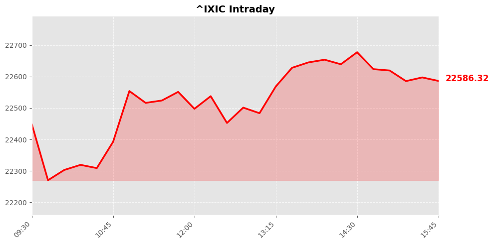
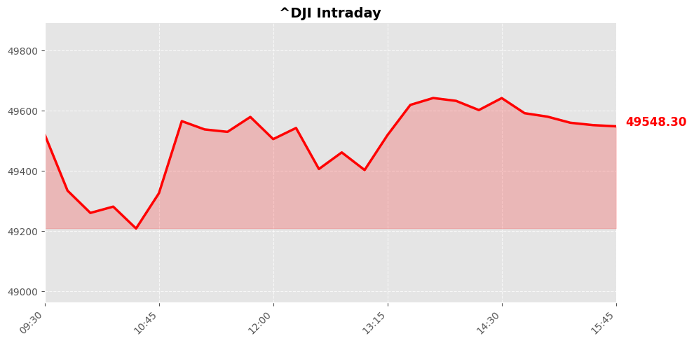
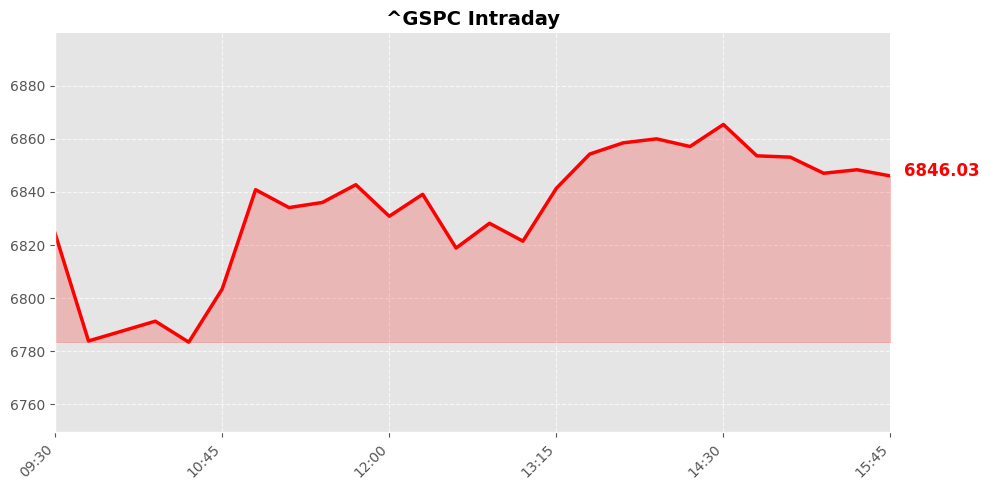

Daily Market Briefing
Market Overview



Market Analysis
The recent market performance indicates a cautiously optimistic sentiment across major U.S. equity indices. All three key benchmarks—the NASDAQ Composite, Dow Jones Industrial Average, and S&P 500—closed modestly higher, reflecting a general risk-on attitude among investors.
The NASDAQ, heavily weighted toward technology and growth-oriented stocks, edged up by approximately 0.14%, suggesting sustained investor confidence in the sector despite ongoing macroeconomic uncertainties. The gain, while modest, indicates a steady appetite for innovation and tech equities, likely supported by robust earnings reports and positive forward guidance from major tech firms.
The Dow Jones saw a marginal increase of about 0.07%, hinting at stability within the more diversified, value-oriented components of the index. This slight uptick could be attributed to resilient industrials, financials, and defensive sectors, possibly buoyed by ongoing economic recovery signals and stabilizing inflation expectations.
The S&P 500's increase of roughly 0.10% underscores a broad-based, yet cautious, investor optimism. The index's performance suggests that market participants are balancing positive earnings outlooks against prevailing concerns over geopolitical developments, inflationary pressures, and monetary policy adjustments.
Overall, the market sentiment remains cautiously bullish. Investors appear to be maintaining confidence in the economic recovery and corporate earnings, while staying alert to potential headwinds such as geopolitical risks and macroeconomic volatility. This environment favors selective risk-taking, with a focus on sectors demonstrating resilience and growth potential, amid a backdrop of moderate but steady gains across major indices.
Today's Headlines
News Analysis
Market Focus Points Today
-
AI and Technology Sector Dynamics:
Recent advancements in AI, exemplified by Anthropic’s release of Claude Sonnet 4.6, highlight the ongoing innovation cycle within the AI industry. Despite some sector-wide pullbacks, investors remain attentive to AI leaders like the recent dip in major AI stocks, which presents opportunities for strategic accumulation. Additionally, J.P. Morgan’s positive outlook on stocks resilient to AI disruption, such as CrowdStrike and C.H. Robinson, underscores a nuanced view of the sector—favoring companies with strong fundamentals and defensive characteristics amid technological upheaval. -
Healthcare Innovations and Market Sentiment:
The initial excitement over GLP-1 drugs, which are linked to weight loss and metabolic health, reflects the high investor interest in biotech and pharmaceutical breakthroughs. The analogy drawn between the drug frenzy and recent market sell-offs in other areas suggests heightened volatility and speculative behavior driven by disruptive innovations. This underscores the importance of discerning fundamental value amid hype, especially in biotech sectors. -
Geopolitical and Policy Influences:
The migration of major companies like Palantir to Florida points to a broader trend of states competing to attract high-tech and data-driven firms through favorable policies. Such movements could influence regional economic growth, tax bases, and stock valuations of local companies, reflecting the importance of geopolitical and regulatory considerations in investment decisions. -
Inflation and Macroeconomic Uncertainty:
Market reactions to conflicting signals about inflation—particularly the recent Fed study questioning the slowdown—highlight ongoing macroeconomic uncertainty. Persistent inflation pressures could influence Federal Reserve policies, impacting interest rates, bond yields, and equity valuations. -
Market Sentiment and Risk Management:
Noteworthy is the active trimming of parabolic stocks and cautious positioning by institutional investors, reflecting risk management amid uncertain market momentum. The recent dip in high-flying tech stocks, including AI leaders, indicates a shift towards more disciplined portfolio adjustments.
Potential Market Impact Factors
- Innovation-driven volatility: Breakthroughs in AI and biotech can cause rapid shifts in sector valuations, creating both opportunities and risks.
- Policy and regulatory developments: The migration of firms to business-friendly states and potential regulatory changes in biotech or AI could influence company prospects and sector stability.
- Macroeconomic signals: Divergent data on inflation and economic growth could lead to increased market volatility, especially regarding interest rate expectations.
- Investor sentiment shifts: Active profit-taking in trending stocks and cautious positioning suggest a more measured approach, which could temper exuberance but also limit upside potential.
Industry Trends Worth Noting
- AI Resilience and Innovation: As AI models like Claude Sonnet 4.6 improve in coding and instructions, the industry is moving towards more sophisticated applications, prompting investors to identify companies that can withstand AI-driven disruption.
- Biotech and Healthcare Speculation: The hype surrounding GLP-1 drugs exemplifies the high volatility and risk-reward balance in biotech, emphasizing the need for due diligence amid rapid innovation.
- Regional Economic Shifts: The migration of firms to states with favorable policies highlights the importance of local regulatory environments in shaping industry dynamics.
- Sustainable Growth and Risk Management: Investors are increasingly focusing on companies with durable growth prospects and prudent risk controls, especially in a potentially volatile macroeconomic backdrop.
In summary, today's market environment remains characterized by technological innovation, macroeconomic uncertainties, and strategic sector shifts, requiring investors to balance growth opportunities with prudent risk management.
Economic Indicators
Inflation Indicators
Employment Indicators
Consumer Indicators
Community Hot Stocks
| Rank | Symbol | Mentions | Source |
|---|---|---|---|
| 1 | NVDA | 98 | |
| 2 | MSFT | 71 | |
| 3 | META | 62 | |
| 4 | AMD | 46 | |
| 5 | NET | 39 | |
| 6 | FACT | 37 | |
| 7 | HIT | 36 | |
| 8 | DOW | 31 | |
| 9 | PUMP | 29 | |
| 10 | VS | 28 | |
| 11 | PLUS | 27 | |
| 12 | ADD | 27 | |
| 13 | CARE | 26 | |
| 14 | PLTR | 26 | |
| 15 | WTF | 24 | |
| 16 | TURN | 24 | |
| 17 | GOOG | 23 | |
| 18 | AMZN | 23 | |
| 19 | PC | 23 | |
| 20 | PDT | 23 |
Market Outlook
Market Outlook for the Next 1-2 Trading Days
The recent session reflects cautious optimism, with the major indices posting modest gains: NASDAQ (+0.14%), Dow (+0.07%), and S&P 500 (+0.1%). This subdued upward movement suggests a market still grappling with a delicate balance of risk and opportunity. Investors appear to be consolidating recent gains amid ongoing macroeconomic and geopolitical uncertainties.
A key theme influencing the market is the initial frenzy surrounding GLP-1 drugs, which underscores the market’s sensitivity to disruptive innovations and biotech developments. While this sector remains attractive, it also warrants caution due to potential regulatory shifts and valuation concerns. Additionally, the migration of major businesses and high-net-worth individuals to Florida signals a broader trend of economic realignment, possibly affecting regional markets and investment flows in the near term.
On the geopolitical front, recent security incidents and political tensions—such as the reported armed individual at the U.S. Capitol—highlight ongoing risks that could trigger short-term volatility. Meanwhile, significant institutional moves, like a prominent investor entering BlackRock beyond its traditional areas, suggest evolving investor strategies and sector rotations that could influence market sentiment.
Looking ahead, the primary risks include geopolitical tensions, potential regulatory headwinds in innovative sectors, and macroeconomic data releases. Investors should monitor how these factors influence market momentum and be prepared for heightened volatility, especially if macroeconomic indicators diverge from expectations.
Key points for investors: - Maintain vigilance on geopolitical and regulatory developments. - Be cautious of sector-specific bubbles, particularly in biotech and innovative sectors. - Watch for shifts in institutional investor behavior and regional economic trends. - Consider hedging strategies to mitigate short-term volatility.
In sum, the market is poised for a cautious, sideways movement with opportunities for selective growth, provided investors remain attentive to emerging risks.
Follow Us

Scan to follow StockGate
For more US stock market insights